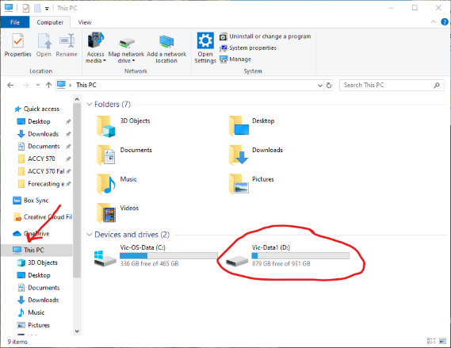
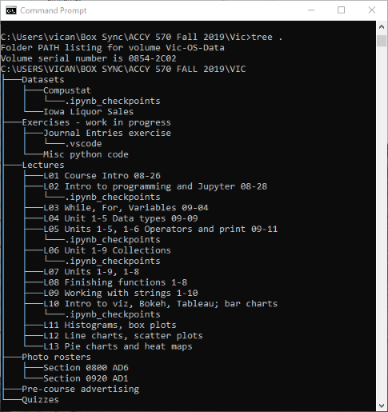
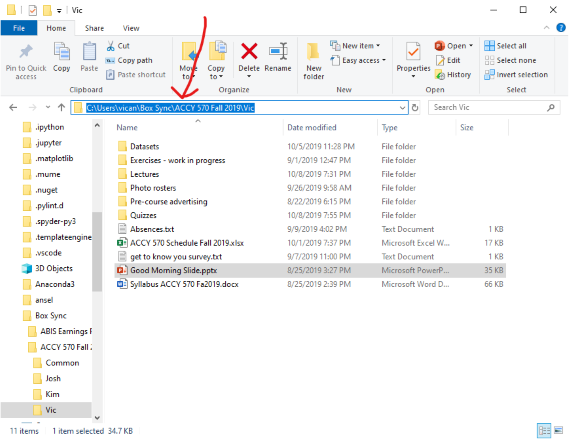
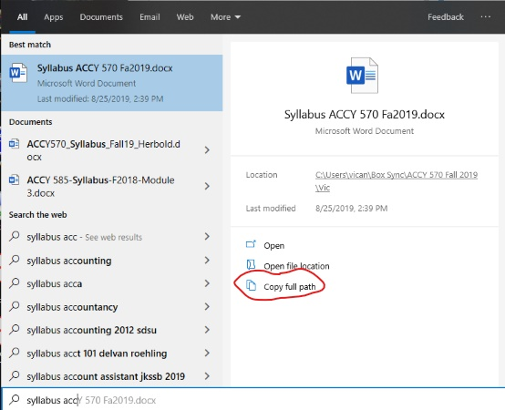
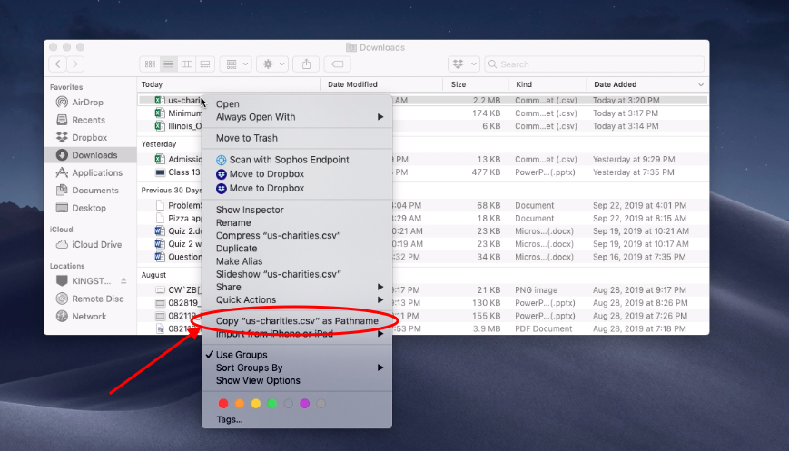

Working with Files and Folders on Your Computer#
Learning Objectives#
- Explain what a file is.
- Explain how folders are containers for files.
- Define a subfolder.
- Draw a tree representing a filesystem, or a portion of a filesystem.
- Locate a file anywhere on Windows and Mac.
- Discover and write the path for any file on Windows and Mac.
- Identify the desktop, downloads, and user home folders on Windows and Mac.
- Write a string in Python representing a Mac file path.
- Write a string in Python representing a Windows file path using any of the following methods:
- Double backslashes
- String literal
- Forward slashes
- Determine and set the current working directory in Jupyter / JupyterLab using the %pwd and %cd commands.
- List the contents of the current working directory in Jupyter / JupyterLab using the %ls command.
Overview#
In prior years, we found that many students did not understand how files are organized on their computers. This caused myriad problems. One common problem was that students would download a Jupyter notebook from Compass, move it to a folder, and work on it. A few days later, they would download the notebook again. They had two (or more) copies of a notebook and did not realize. They would open one notebook and wonder where their work had gone, not realizing they had a second copy of the notebook elsewhere on their computer. Another common problem was that they had difficulty opening files in Python because they did not understand the concept of a path.
In this chapter, we will prevent these problems by teaching you about your computer’s filesystem. The concepts apply to Windows computers and to Macs (and to Linux). The details differ by platform so we will show you how it works on both platforms. We expect the Windows users to learn the details for Macs, and vice versa.
Files#
Your computer has permanent storage for your data. Most likely, your laptop has a solid-state drive, or SSD. If your computer is a few years old, you might have a hard drive. Hard drives and SSD’s use different technology to do the same thing – store your data, even after you turn off your computer.
On your drive, data is organized into files. A file is a container for data. Consider an Excel file. It stores data values, the location of those values, formatting, worksheet names, etc. As a user, you probably don’t care how Excel stores your data. However, now that you’re going to work with data files, you need to care. :)
There are two types of files:
Text files
Binary files
In a text file, the data is stored in plain text. You can open a text file in any editor such as notepad (Windows), notes (Mac), or even Word or Excel. By contrast, a binary file stores its data as 1’s and 0’s. This allows for a more efficient representation (i.e. less disk space), but if your program doesn’t know the representation, it can’t open the file.
In this course, you’ll learn some of the basics of working with text and binary files.
Folders / Directories#
Your computer has at least a few hundred thousand files (I just checked and my Windows desktop has 885,324 files!). If all your files were located in one place, it would be very difficult for you, and for your programs, to find the files you need. Therefore, all modern computers have a “filesystem” that allows files to be organized into folders. A folder is a container for files. Thus, we have a hierarchy: data is stored in a file, and a file is stored in a folder. Folders are stored on drives. So remember that: Drives contain folders that contain files that contain data (DRIVE > FOLDER > FILE > DATA).
FYI, the terms folder and directory mean the same thing.
The Root Folder#
Every drive has what’s called a root folder or root directory. This is simply the topmost folder in a drive.
Most of your computers have only one drive (and therefore only one root folder). However, if you plug in a USB drive or an SD card, your computer will recognize that as a second drive.
Windows#
On a Windows computer with a single drive, the root folder is usually C:\. The letter C refers to the drive. In the old days, well before you were born, computers had floppy drives (no hard drives! Imagine being able to only store 360 kilobytes on a disk). By convention, the first drive on the computer was the A drive and its root folder was A:\. After a while, computers came with two floppy drives and the root folder of the second drive was B:\. Eventually, hard drives came on the scene and the root path of the hard drive was C:\. I got my first hard drive in 1988 and it stored 20 MB.
If you plug in a USB drive or SD card, Windows will assign a drive letter. Most likely, it will get D, but you might see E or F. To check, open the File Explorer program and click on “This PC” in the bar at left. See the screenshot below. The second drive is circled.

Mac#
On a Mac computer, the root folder is simply a forward slash /.
Another difference between Windows computers and Macs is that when you plug a USB drive into a Mac, you don’t get a new drive letter (like you do with Windows). Instead, Macs usually create a subdirectory underneath the root folder titled Volumes. Macs will also search the USB drive for a name (which you might have assigned, like “Jen’s Thumb Drive”); if there is no name assigned to the USB drive, the Mac OS will often call it NO NAME.
Subfolders and Folder Trees#
A folder can contain other folders. A folder inside a folder is called a “subfolder” or “subdirectory”. Typically, modern computers have many, many layers of folders within folders. This helps the operating system organize itself. The files for your operating system are located in one subfolder of the root folder. The files for different programs are located in a different subfolder of the root folder. And user files are located in yet another subfolder of the root folder.
Many people organize their “home” folder by creating subfolders for different projects or tasks. For example, you might have a “Classes” subfolder within your user folder. Within “Classes”, you might have one subfolder per semester. Within each of those, you might have separate folders for each class. And so on. There’s no correct way to do this – whatever works for you.
User Folders#
Your operating system provides you with special folders for storing your files. The topmost of these is your “home” folder. Usually, all of the folders for your data are subfolders of your home folder. Some common subfolders of your home folder are:
Downloads folder
Desktop folder
Documents folder (on Windows)
Later in this document, we’ll provide you with more detail on these special folders.
Folder Trees#
You can think of folders as being organized into a “tree”. At the top of the tree is the root folder. Each branch of the root folder is a subfolder, which may have its own branches. Windows has a built-in command tree that shows you a folder tree (you can install an equivalent command on Mac by following these steps).
Here’s a snapshot of the folder tree for my ACCY 570 subfolder. You can see that the subfolders of my ACCY 570 folder are “Datasets”, “Exercises - work in progress”, “Lectures”, etc. Within each of those, you can see the subfolders.

Paths#
Every file on your computer has a “path”. A path is like an address. It tells your computer exactly how to locate a file. Modern operating systems provide graphical tools (e.g. File Explorer on Windows and Finder on Mac) that attempt to make your life easier by hiding the details of paths from you. However, when working with files on Python, you will need to understand how to read and write paths to files.
Writing the Path for a File#
File Paths on Mac#
On a Mac, the path to the root folder is simply the forward slash, or /. Say you have an Excel file called Animals.xlsx located in the root folder. It’s path would be /Animals.xlsx.
The User Home Directory#
On a Mac, your user home directory will be /Users/your_username. So if your username is kimendoz, your home directory will be /Users/kimendoz. In a moment, we will show you how to retrieve your username. For now, assume you know it.
Subfolders of your home directory#
Say that the user herbo has a subfolder ACCY 570 in his home directory. Within that subfolder, he created another subfolder for problem set 1 called PS1. Within that folder, he has a data file StockData.csv. The full path to his data file would be /Users/herbo/ACCY 570/PS1/StockData.csv. This path is like an address for the file. When you are ready to load a file into Python, you will need to provide this path to a function.
Downloads folder#
The path to the downloads folder is /Users/your_username/Downloads. If there’s a file Zebra.txt in that folder, its full path would be /Users/your_username/Downloads/Zebra.txt.
Desktop folder#
The path to the downloads folder is /Users/your_username/Desktop. If there’s a file Crocodile.txt in that folder, its full path would be /Users/your_username/Desktop/Crocodile.txt.
File Paths on Windows#
If you read the section above on Macs (and you should have), then we can summarize the rules for Windows as follows.
The root folder is
C:\for drive C,D:\for drive D, etc.Replace all forward slashes with back slashes.
Below, we repeat all of the Mac examples for Windows.
On Windows, the path to the root folder of drive C is C:\. Say you have an Excel file called Animals.xlsx located in the root folder. It’s path would be C:\Animals.xlsx.
The User Home Directory#
On Windows, your user home directory will be C:\Users\your_username. So if your username is kimendoz, your home directory will be C:\Users\kimendoz. In a moment, we will show you how to retrieve your username. For now, assume you know it.
Subfolders of your home directory#
Say that the user herbo has a subfolder ACCY 570 in his home directory. Within that subfolder, he created another subfolder for problem set 1 called PS1. Within that folder, he has a data file StockData.csv. The full path to his data file would be C:\Users\herbo\ACCY 570\PS1\StockData.csv. This path is like an address for the file. When you are ready to load a file into Python, you will need to provide this path to a function.
Downloads folder#
The path to the downloads folder is C:\Users\your_username\Downloads. If there’s a file Zebra.txt in that folder, its full path would be C:\Users\your_username\Downloads\Zebra.txt.
Desktop folder#
The path to the downloads folder is C:\Users\your_username\Desktop. If there’s a file Crocodile.txt in that folder, its full path would be C:\Users\your_username\Desktop\Crocodile.txt.
Retrieving File Paths#
On Windows#
On Windows, there are multiple ways to retrieve the path to a file:
In File Explorer, navigate to the folder that contains your file. Then click in the address bar. See screenshot below.
In File Explorer, navigate to the folder that contains your file. Then hold down the SHIFT key and right-click on the file. A menu will appear and one of the options will be “Copy as path”. Click on that menu item and the full path to the file will be copied to your clipboard.
In recent versions of Windows 10, open the start menu and type the name of your file. In the search results, you will see an option that says “Copy file path”. Click on that and the full path to the file will be copied to your clipboard. See screenshot below. 
On Mac#
On a Mac, the easiest way to retrieve the path to a file is similar to the second option listed above for Windows. In the Finder, navigate to the file of interest. Right-click on the file (or CONTROL-click, or two-finger-click on a trackpad); while in this menu, hold down the OPTION key. Notice that the Copy <file> option changes to Copy <file> as Pathname. (NOTE: the name of your file will be in quotes where you see <file>.) Selecting that will copy the path to your clipboard, and you can now paste that path as text in Python (or anywhere else). The screenshot below shows an example.

Getting your User Name#
Your operating system assigns each user a username. Your username is used to create a user home folder for you. In this section, we will show you how to retrieve your user name.
Your username may differ from your display name. Do not assume you know your username. When you start up your computer and it asks for your password, it shows your display name, e.g. “Jack Smith”. However, your username is likely different. It may be jsmith, jacksmith, jacks, or “jasmit”.
One way to discover your user name is to find a file somewhere in your user folders and, by using one of the methods above, learn the full path. You will see your username in there.
Another way is to use Python’s built-in function getlogin. To use that, run the code cell below:
from os import getlogin
print(f'Your username is: {getlogin()}')
Your username is: vican
Once you have discovered your username, remember that your user home folder will be:
Windows:
c:\users\your_usernameMac:
/Users/your_username
Passing a File Path to a Python Function as an Argument#
When you want to load a data file in Python, you will need to pass the full path of the file to a Python function. In this section, we show you how to do so.
On a Mac#
On a Mac, it’s really easy. Retrieve the path to the file using one of the methods described above. Write the path to the file using forward slashes.
For example, say you downloaded a file “Dog.xlsx” into your downloads directory. The path would be /Users/your_username/Downloads/Dog.xlsx
You pass the path to a function as a string. Thus, you enclose the path in single or double quotes. Experiment with the following code by using paths to files that exist and to files that do not exist.
# The os.path.exists function returns True if a path exists and False otherwise
import os.path
os.path.exists('/users/vican/downloads/Dog.xlsx')
False
On Windows#
It’s a little more complicated in Windows than on Mac. The problem is that Windows uses backslashes in its paths and Python treats backslashes as special characters. For example, the tab character in Python is \t and the newline character is \n.
Say you downloaded a file “Dog.xlsx” into your downloads directory. On Windows, there are 3 ways to pass that file path as an argument to a function:
Use double backslashes. While
\tmeans the tab character,\\means the backslash character. Thus, to pass a path to Dog.xlsx to a function, you would enter'c:\\users\\your_username\\downloads\\dog.xlsx'Use the letter r as a prefix to your string. Remember f-strings? Well there are r-strings. When Python sees an r before a string, it does not assign special meanings to anything inside the string. Instead, it reads the string literally. Thus, to pass a path to Dog.xlsx to a function using this method, you would enter
r'c:\users\your_username\downloads\dog.xlsx'Python on Windows understands forward slashes. Therefore, you could just enter
'c:/users/your_username/downloads/dog.xlsx'and it would work.
Try using the following code with paths to files that exist and with files that do not exist.
# The os.path.exists function returns True if a path exists and False otherwise
import os.path
# Method 1
os.path.exists('c:\\users\\vican\\downloads')
True
# Method 2
os.path.exists(r'c:\users\vican\downloads\Dog.xlsx')
False
# Method 3
os.path.exists('c:/users/vican/downloads/Dog.xlsx')
False
The Current Working Directory in Jupyter#
When you open a Jupyter notebook, Python sets the current working directory to the path of your notebook. Thus, if you want to open a file that’s in the same folder as your notebook, you do not have to type the path. For example, say there’s a file ACCY570.csv in the same folder as this notebook. If I want to open it, I can just pass 'ACCY570.csv' as an argument to a function. Python will automatically look in the same folder as this notebook.
Checking the current working directory#
If you want Jupyter to tell you its current working directory, you can enter the command %pwd in a cell. pwd is an old UNIX command that stands for “print working directory”. Try it below.
%pwd
'C:\\Users\\vican\\Documents\\GitHub\\Data-Analytics-Textbook\\Unit 3'
Changing the current working directory#
Say you don’t feel like typing paths and you want to change the current working directory. Use the command %cd, which stands for “change directory”. After the command, type the path of the directory you want. Do not use parentheses or quotes.
Try it below.
%cd c:/users/vican/desktop
c:\users\vican\desktop
Printing all the files and folders in a directory#
Sometimes, you want to know the names of the files and subfolders in the current directory. You could use File Explorer (Windows) or Finder (Mac), but it’s also easy to do this in Jupyter. Just type %ls into a cell. Try it below.
%ls
Volume in drive C is VIC-OS-DATA
Volume Serial Number is 2EF9-7712
Directory of c:\Users\vican\Desktop
08/20/2024 11:40 PM <DIR> .
08/16/2024 11:23 AM <DIR> ..
06/23/2020 02:54 PM 385,093 20200620_142625_015.jpg
05/13/2024 06:50 PM 34,188 AMIS Journal List August 2016.docx
07/07/2024 02:14 PM 13,908 Anonymous Note.docx
06/10/2020 04:14 PM 254,344 Blue Yeti modes.png
05/25/2023 01:25 PM <DIR> CreativeDataAnalytics_v1.0.0
07/24/2024 01:40 PM 61,199 Feynman.jpg
05/18/2023 10:32 AM 154,739 HC competition results 5-17-2023.jpg
01/17/2017 02:22 PM 366,530 motogp-lorenzo-ducati.jpg
09/23/2015 01:17 PM 162,814 motogp-lorenzo-five-races-left-2015.jpg
07/09/2023 01:34 PM <DIR> Papers to read
08/26/2012 08:32 PM 49,802 Pic o' Dad.png
01/07/2024 04:57 PM 663,867 TAR - Lyle and Yohn (2024).pdf
07/02/2024 09:35 PM 174,502 Thornewood development plans.jpg
11 File(s) 2,320,986 bytes
4 Dir(s) 1,713,293,803,520 bytes free